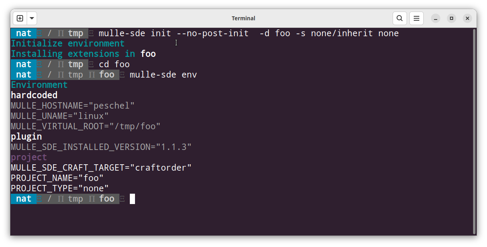

🌳 Virtual Environment
Environment variables are used
by mulle-sde to store project related information, like the programming
language to use, the place to search for dependencies and so on.
If one were to use the global shell environment (setup by a .bashrc or
.profile file) for these environment variables, this wouldn’t go very far, as
different projects would interfere with each other.
Therefore mulle-sde provides a custom environment. In it, unwanted environment settings are hidden and desired settings are added. Furthermore these environment settings can be specific to a certain platform or host or user.
A clean environement for consistent builds
Differences in environment variable values between different developers or computers are a source of subtle and hard to find bugs like “Why is the sort order different on this machine ?” Development in a consistent environment is a time saver.
Quick Demo
Let’s create a virtual environment in a demo folder “foo”. The virtual
environment will have a certain style called none/inherit, which filters
out most environment variables. It will leave the PATH variable intact though.
The command mulle-sde init -d foo -s none/inherit none will do
all of that:

The mulle-sde env command shows the environment variables, that
are added by the virtual environment configuration. These environment variables
are grouped by scope (see below). The complete environment, as available
to the commands running in the virtual environment, can be seen with:
mulle-sde run env | sort. mulle-sde run executes a single command inside
the virtual environment. You can also get an interactive shell with just
mulle-sde.
The “foo” folder will appear empty as the virtual environment is stored in a hidden
.mullefolder. If mulle-sde finds no.mullefolder in the current directory, a search is made, to find the nearest enclosing virtual environment. Thus you can execute mulle-sde commands, wherever you are inside the project.
Scopes
Environment variables in mulle-sde are scoped. There is a certain order in
which they are defined, so that settings can inherit or override previous
setting. For example a mulle-sde plugin may specify a default executable
FOO_EXE=foo. But you may need a different tool on macOS. So you specify for
macOS: mulle-sde env --os darwin set FOO_EXE bar.
This value will then override the plugin value on macOS only.
How do you know that you need to use “darwin” on macOS ? Run
mulle-sde unameto get the short identifier for the current platform.
The scopes, in order of them being read, are:
| Scope | Read/Write | Description |
|---|---|---|
hardcoded |
NO | Variables needed by mulle-sde scripts. |
plugin |
NO | Variables added by the chosen plugin (see Tool-style). |
plugin-os-<uname> |
NO | Variables added by the chosen plugin for specific platforms. |
project |
YES | Project specific variables. Usually set once and rarely changed. |
global |
YES | Global project tweaks. This is the default scope for many commands. |
os-<uname> |
YES | Platform specific tweaks. |
host-<hostname> |
YES | Host specific tweaks. |
user-<username> |
YES | User specific tweaks. |
post-global |
YES | Globally incorporate changes from site/user/host tweaks. |
The order is important, for example host-<hostname> variables can override
os-<uname> variables. They can also expand them.
$ mulle-sde env --this-os set X_PATH 'a:b'
$ mulle-sde env --this-host set X_PATH '${X_PATH}:c'
$ mulle-sde env get --output-eval X_PATH
a:b:c
Can you add more scopes ? Yes.
Note
globalsettings are still local to the project environment. They are global, in that they always apply, no matter the platform, user, or host.
PATH restrictions
The PATH environment variable is used to find commands to execute. With
mulle-sde you can prune the PATH down, so that only a very basic set of
commands is available. This way, your project won’t accidentally rely on
features, that are not present on other platforms. With the mulle-sde tool add
command, you add commands that are necessary:
mulle-sde tool add --optional cmake
You can differentiate between required and optional tools and you can have different tools for different platforms.
Environment Styles
Let’s get back to the
mulle-sde init -d foo -s none/inherit none command and
talk about the none/inherit style some more. A style specifies in the first
part the “tool style” (often provided by a “plugin”) and in the second part
the “environment style”, also known as the “flavor”.
Currently there are five known environment styles, ordered from restrictive to loose:
| Env-style | Description |
|---|---|
none |
All environment variables must be user defined |
restrict |
Inherit some environment (like SSH_TTY) |
relax |
as “restrict” plus /bin and /usr/bin are available via PATH |
inherit |
as “restrict”, but PATH is kept intact |
wild |
no restrictions |
Tool Styles
The four toolstyles are used to augment the basic environment styles none and
restrict with a predefined set of tools. For mulle-sde development tool-style
mulle will be the norm.
| Tool-style | Description |
|---|---|
none |
No additions to the tool list |
minimal |
a minimal set of tools (like cd, ls) |
developer |
a common set of tools (like cd, ls, awk, man) |
mulle |
Like developer but also adds mulle-sde tools |
Since the contents of PATH or /bin aren’t clearly defined and vary on a
per host and per platform basis, relax and inherit are relatively blunt
instruments. The tool styles based on none or restrict offer more fine
grained control over the available tools.
Breaking out of the environment
With mudo you can run commands with an unrestricted PATH from inside the
virtual environment e.g. mudo subl src/main.m.
Final words
If virtual environments is all you need, you don’t need the full mulle-sde install but can use mulle-env instead, which is actually responsible for all the environment handling.